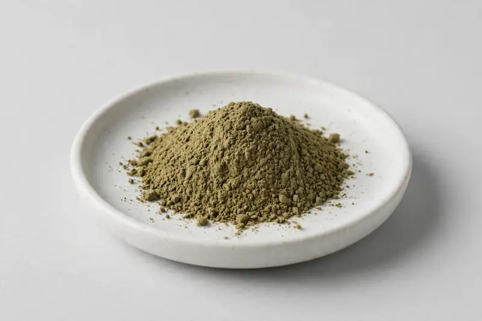

Salvia officinalis leaf extract in ratio or rosmarinic acid grades — a versatile botanical for cognitive-focus, culinary, and cosmetic formulations.

Overview
Sage extract comes from the leaf of Salvia officinalis and is traded in two broad directions: ratio extracts such as 10:1, and standardized grades based on rosmarinic acid. It appears in cognitive-focus supplement concepts as well as culinary and cosmetic applications. As a Xi'an-based trading company working through vetted partner producers, we help buyers match the right grade to their intended formulation and confirm documentation feasibility before quoting.
Specifications below reflect commonly requested options in the market — not a stock list. Share your target spec and we'll confirm exactly what we can supply, honestly.
| Specification | Details |
|---|---|
| Botanical identity | Salvia officinalis leaf extract powder |
| Marker compound | Rosmarinic acid — commonly requested grades; ratio extracts such as 10:1 also widely traded |
| Appearance | Greenish-brown to brown fine powder |
| Mesh size | Typically 80–100 mesh (confirm per inquiry) |
| Testing | COA/TDS arranged on request; scope agreed per your spec |
Applications
Documentation
We don't claim in-house labs or certifications we don't hold. COA and TDS documents can be arranged on request, and testing scope is agreed against your specification before supply.
FAQ
Related products
Panax ginseng
Key marker: Ginsenosides
View specs →Curcuma longa
Key marker: Curcuminoids
View specs →Nattokinase (fermented soybean enzyme)
Key marker: 20,000-40,000 FU/g
View specs →Perilla frutescens
Key marker: ALA oil / rosmarinic acid
View specs →Diosmin (citrus-derived flavonoid)
Key marker: Diosmin 90%+
View specs →Send your target spec and volumes — we'll respond with a tailored quotation.
Request a Quote